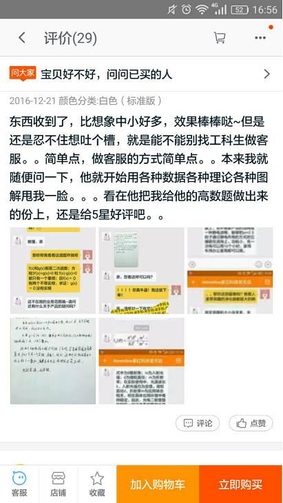
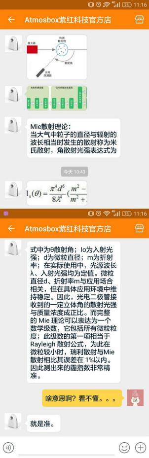
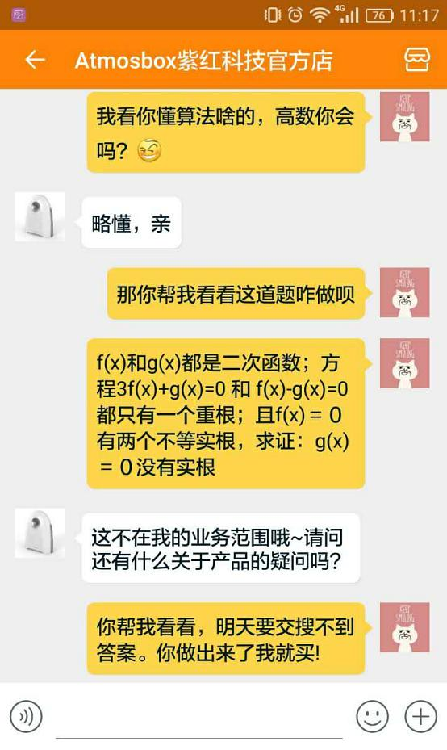
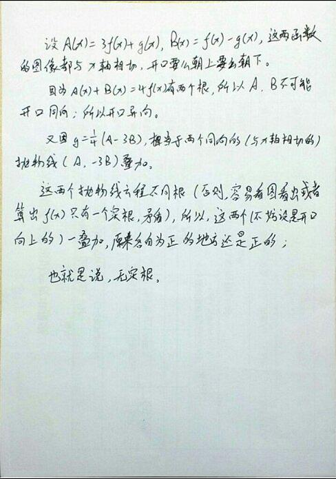
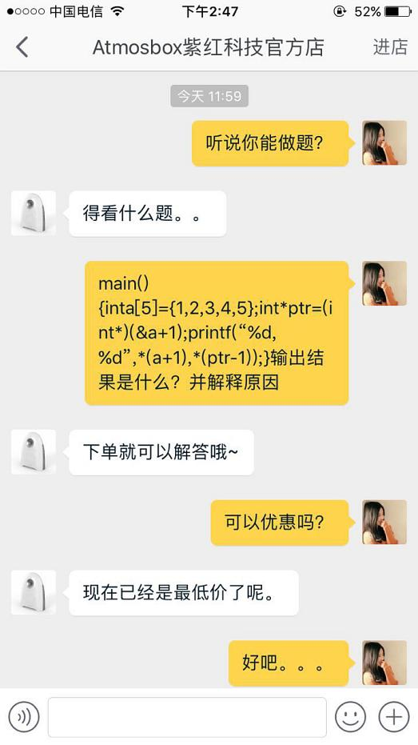
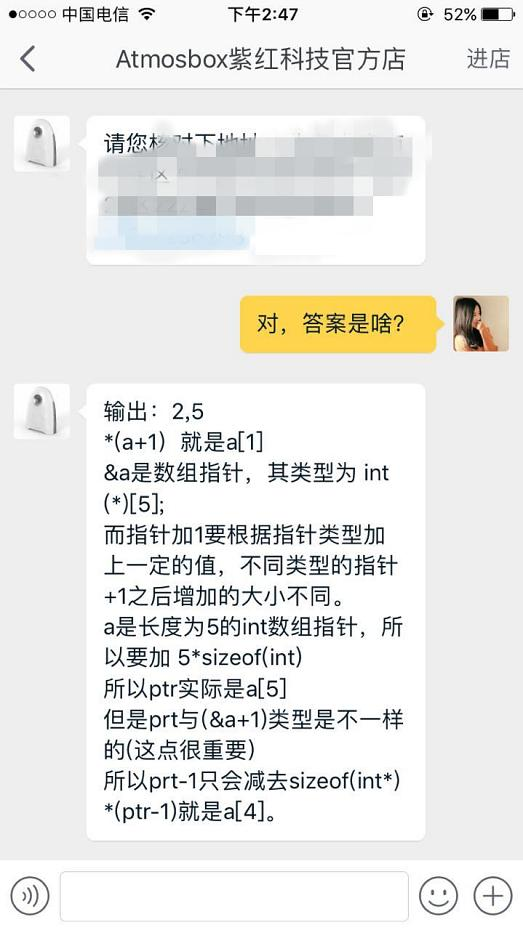

2016-12-25 16:44:39
转发：
二货主人将哈士奇弄成哈士驴，哈士驴一脸的生无可恋，太逗了原谅我笑了。。。
2016-12-25 16:43:52
转发：
连这么下去我连客服都做不了了！！！ #论一个淘宝客服的专业技能#






2016-12-23 17:28:57
看过 龙纹身的女孩 / The Girl with the Dragon Tattoo
2016-12-22 20:37:20
看过 吹响悠风号2 / 響け！ユーフォニアム2
2016-12-21 07:33:18
在读 无器械健身
哈哈哈哈哈哈哈哈哈哈
2016-12-16 16:10:33
看过 谍影重重5 / Jason Bourne
2016-12-15 20:17:12
在读 In Search of Lost Time
又看了遍《情书》，顺手在图书馆搜了一下，竟然有实体书，还是翻翻好了
2016-12-13 13:15:46
看过 你的名字。 / 君の名は。
2016-12-01 19:54:55
看过 斯诺登 / Snowden
2016-11-28 18:30:26
看过 神奇动物在哪里 / Fantastic Beasts and Where to Find Them
2016-11-21 18:19:58
想玩 看门狗2 Watch_Dogs 2
第一次剁手入正Gold版，这种专业相关的游戏真是没有抵抗力啊！！！
2016-11-21 18:09:15
玩过 极限巅峰 Steep
2016-11-21 18:05:56
玩过 光之子 Child of Light
2016-11-14 19:58:25
看过 海底总动员2：多莉去哪儿 / Finding Dory
2016-11-11 09:34:32
看过 黑镜 第三季 / Black Mirror Season 3
2016-11-10 21:14:06
看过 美丽人生 / La vita è bella
2016-11-09 18:12:11
相见恨晚啊，国际版的“简书”！
2016-11-08 21:16:30
喜欢日记：
2016-11-03 20:41:34
玩过 席德·梅尔的文明VI Sid Meier's Civilization VI
2016-09-30 10:11:28
看过 15名动画人 / アニ＊クリ15
2016-09-29 02:39:21
看过 天空之眼 / Eye in the Sky
2016-09-27 18:47:06
看过 选帝侯大街56 / Ku'damm 56
2016-09-27 18:41:16
想看
2016-09-25 19:18:00
看过 Rewrite / Rewrite リライト
2016-09-21 19:01:44
看过 她和她的猫 / 彼女と彼女の猫 -Everything Flows-
2016-09-20 13:06:05
看过 Re：从零开始的异世界生活
2016-09-18 23:53:59
玩过 银河历险记 3 Samorost 3
2016-09-17 10:07:30
看过 数码宝贝大冒险tri. 第2章：决意 / デジモンアドベンチャー tri. 第2章 決意
2016-09-16 19:32:46
看过 釜山行 / 부산행
2016-09-15 23:31:06
看过 数码宝贝大冒险tri. 第1章：再会 / デジモンアドベンチャー tri. 第1章 再会
2016-09-10 23:07:08
想看 你的名字。 / 君の名は。
唯一一部能看360P画质还能流泪的动画，真的好好看好好看好好看！！！大量的3D运镜，故事也是波澜起伏开放式结局，搞笑与温馨并存，等放1080P了一定要再看一遍！（由于土澳网卡，有史以来唯一一次开流量看视频）
2016-09-10 20:04:25
玩过 银河历险记2 Samorost 2
2016-09-03 17:01:58
看过 爱宠大机密 / The Secret Life of Pets
2016-09-03 15:09:57
看过 美国队长3 / Captain America: Civil War